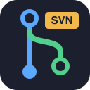
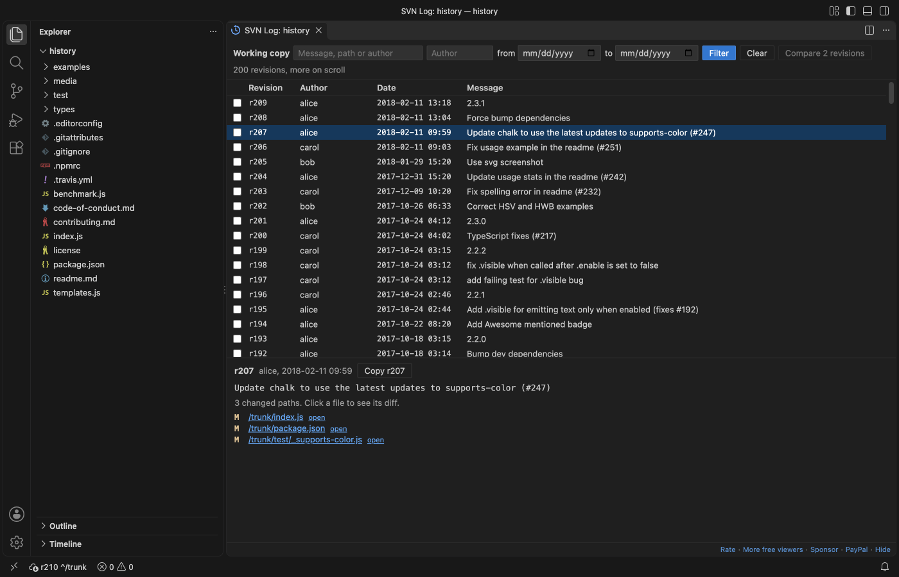
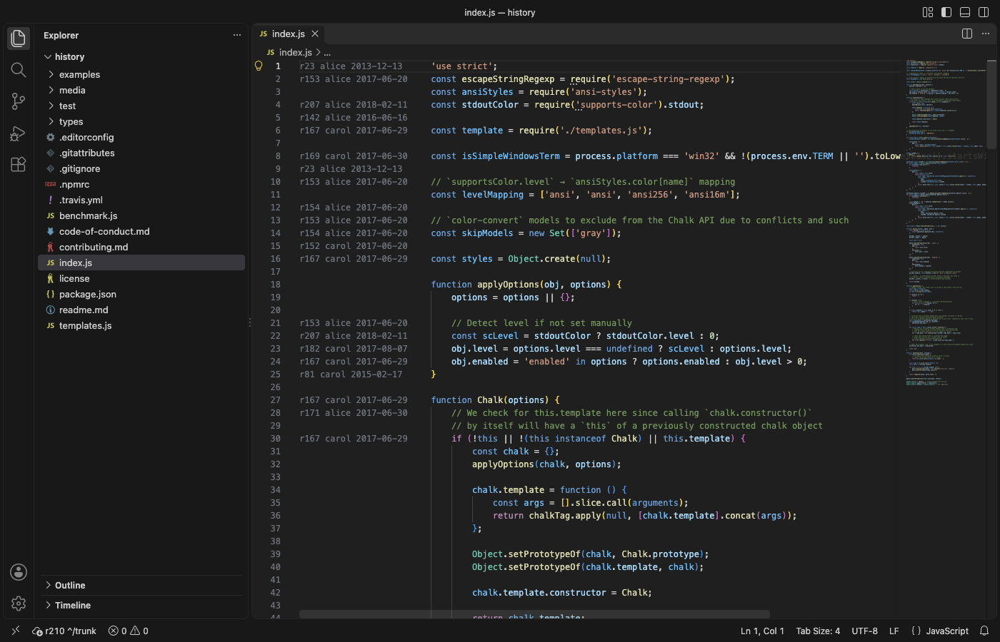
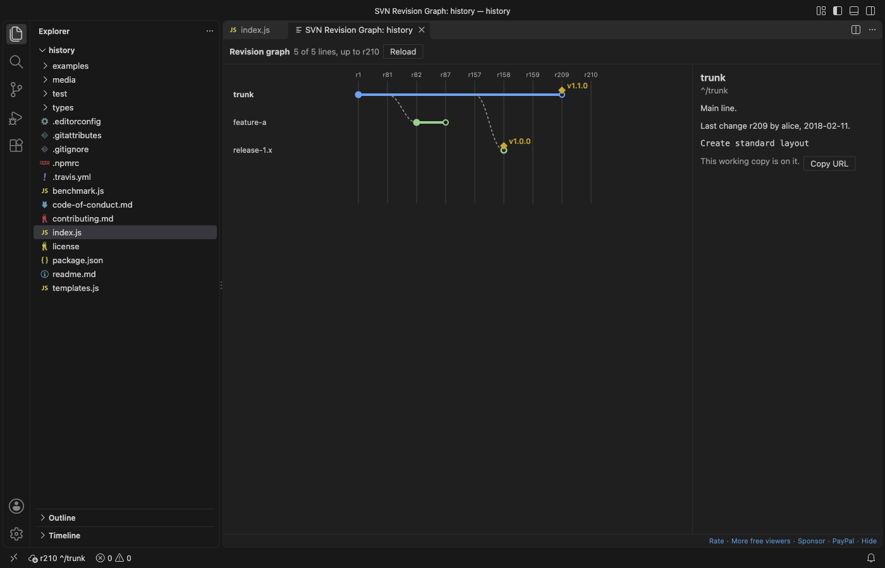

SVN Client & Subversion Source Control (Commit, Blame, Log, Diff)
SVN Client & Subversion Source Control (Commit, Blame, Log, Diff), a VS Code extension by Zovo
Free SVN client for VS Code that uses your own svn command line. Subversion source control with commit, update, diff, log, blame, branch, switch and merge, one svn status at a time, and nested working copies found once. No sign-in, no network of its own.
Free, MIT license. Needs VS Code 1.90.0 or newer. Extension ID zovo.zovo-svn-client, version 0.2.1.
Free SVN client for VS Code. It runs the svn command line you already have, so it works with any Subversion server you can reach today. Free, no sign-in, works offline: the extension itself sends nothing anywhere, and only svn talks to your own repository server.

Real output from VS Code 1.142 on macOS with svn 1.15.0. The working copy comes from scripts/make-fixtures.sh. scripts/gate-vscode.mjs installed the packaged extension in a clean VS Code profile, clicked util.js in the Source Control view and saved the window.
- Commit, update and diff from the Source Control view. Changes, Unversioned, Conflicts and each changelist get their own group, and the gutter marks changed lines against BASE.
- History and blame without leaving the editor. The log view pages through the history with filters for text, author and date, and blame shows who changed each line.
- It stays light on big working copies. Only one
svn statusruns per working copy at a time, file events are bundled into one run, and build folders can be left out.
Quick start
- Have the svn command line. Check with
svn --versionin a terminal. If it is missing, SVN Client shows an install page with the command for your system (Homebrew, apt, dnf, TortoiseSVN command line tools, SlikSVN). - Open a folder that was checked out with svn, or run "SVN: Checkout..." with a repository URL. The working copy shows in the Source Control view.
- Type a message and press Ctrl+Enter (Cmd+Enter on macOS) to commit.
"SVN: Get Started" in the Command Palette opens a short tour.
Questions people ask
Is SVN Client & Subversion Source Control (Commit, Blame, Log, Diff) free?
Yes. SVN Client & Subversion Source Control (Commit, Blame, Log, Diff) is free and MIT licensed.
How do I install SVN Client & Subversion Source Control (Commit, Blame, Log, Diff)?
Click "Install in VS Code" above, or search for zovo.zovo-svn-client in the Extensions view.
Why this one
People who use SVN extensions in VS Code have written about these problems in Marketplace reviews. This extension was built and tested against each one:
| What people wrote | What SVN Client does | Measured |
|---|---|---|
| "Starts dozens of svn instances when building in the folder. Useless CPU hog" (review, 2020-07-07) | File events only ask for a refresh. Many events become one svn status, and a second status never starts while one runs. Excluded folders (node_modules, build, dist, target, out) start no status at all. | In the real VS Code gate, a script wrote 5,000 files into a 100,000-file working copy while ps checked every 50 ms: never more than 1 svn status at a time, 2 status runs in all. |
| "it generates multiple projects. Same change file, different project names." (review, 2025-02-19) | Each working copy root is found once, by the root that svn info reports, however many workspace folders sit inside it. Nested working copies and externals get their own entry, labelled by path. | Gate: a working copy with a separate checkout nested inside it, opened as 2 workspace folders, shows 2 entries (outer and nested). An externals folder gets its own entry. |
| "I have installed tortoiseSVN but error Svn installation not found." (review, 2018-10-03) | SVN Client looks on PATH and in the usual install folders (Homebrew, /usr/local, TortoiseSVN, SlikSVN, CollabNet, VisualSVN). When svn is missing it shows one page with the install command and a Retry button, not a loop of error messages. | Gate: with svn missing, one install page opened and no error message showed. The Windows folders are covered by unit tests, not by a Windows run. |
A server that does not answer is stopped after a time limit with a message (zovoSvn.networkTimeoutSec), so VS Code never waits on a dead connection. In the gate, with the limit at 8 s, Update against an address that never answers stopped after 8.9 s with that message, and VS Code stayed responsive.
Features
Source Control
| Group | What is in it |
|---|---|
| Conflicts | Text, property and tree conflicts. Commit waits until they are resolved. The helper files svn writes next to a conflict (.mine, .r12, .merge-left.r2) are not listed as unversioned. |
| Changes | Modified, added, deleted, replaced and missing files (deleted outside svn), and property changes |
| Changelist: name | One group per svn changelist, with its own Commit button |
| Unversioned | New files, with Add and Add to svn:ignore |
Buttons and menus: Commit, Commit Selected Files, Commit Changelist, Update, Update to Revision, Revert (with a confirmation; unversioned files go to the trash), Add, Delete, Add to svn:ignore, Resolve (mark resolved, mine, theirs, base), Move to Changelist, Cleanup and Refresh. Explorer and editor tabs show the M, A, D, ?, ! and C letters.
Diff
Click a changed file to compare it with its BASE revision. BASE comes from svn's own pristine copy, so it needs no network. Files with svn:keywords show the same expanded $Id$ on both sides. Binary files and files over zovoSvn.maxDiffMB (20 MB) get a short note instead of a text diff, with buttons to open the file or its history. Nothing is loaded until you ask.
Log

"SVN: Show Log" for the working copy, or "Show File History" from the editor or Explorer menu for one file or folder.
- 100 revisions per page, more as you scroll
- Filter by text, author and date range (
svn log --searchon the server, so it covers the whole history) - The full message and the changed paths of a revision. Click a path to see its diff, or "open" to see the file at that revision.
- Tick two revisions and press Compare to see what changed between them
Blame

"SVN: Toggle Blame" puts the revision, author and date before every line. Hover a line for the commit message and a link to all changes of that revision. Lines you changed and did not commit say "not committed". Set zovoSvn.blame.mode to inline to show it only after the line the cursor is on.
Branches and tags
- Switch to trunk, a branch or a tag, picked from a list read from
branches/andtags/next to your working copy - Create a branch or a tag from HEAD, from your working copy revision, or from the working copy with its local changes
- Merge from a branch: every revision not merged yet, or a list like
120,125-130. A dry run shows what would change, and the exactsvn mergecommand shows before anything runs. - The revision graph draws trunk, branches and tags over time

Shelving
"SVN: Shelve Changes" saves your local changes as a patch in the extension's storage and reverts the files. "SVN: Unshelve" brings them back with svn patch. It works with every svn from 1.7, not only with the experimental shelving of svn 1.10 to 1.14. Binary changes cannot go into a text patch, so a shelf with them is refused before any file is touched.
Changelists
The SVN Changelists view in the Source Control side bar lists each changelist and its files. Drag files from it or from the Explorer onto a changelist to move them there, or onto "No changelist" to take them out.
Large working copies
- One
svn statusper working copy at a time, afterzovoSvn.statusDelayMs(1 second) of quiet. A build that writes thousands of files causes one or two status runs, not thousands. zovoSvn.excludekeeps build folders out: changes there start no status, and unversioned files there are not listed.zovoSvn.statusDepthlimits how deep status looks, for very large trees you only change near the top.- Each group lists at most
zovoSvn.maxListedFiles(5,000) files. The count stays exact. - Status skips externals, which get their own entry, so one slow external does not hold up the rest.
- Measured in the real VS Code gate: a working copy with 100,000 files showed its changes 4.9 s after VS Code started. A 300 MB binary file is listed as modified and gets a short note instead of a text diff.
Settings
| Setting | Default | What it does |
|---|---|---|
zovoSvn.path | empty | Full path of svn. Empty: PATH and the usual install folders. A workspace cannot set it. |
zovoSvn.statusDelayMs | 1000 | Quiet time before one status run |
zovoSvn.statusDepth | infinity | infinity, immediates, files or empty |
zovoSvn.exclude | node_modules, .git, build, dist, target, out, .gradle, __pycache__ | Folders that start no status and whose unversioned files are not listed |
zovoSvn.detectDepth | 3 | Folder levels searched for nested working copies |
zovoSvn.showUnversioned | true | Show the Unversioned group |
zovoSvn.maxListedFiles | 5000 | Most files listed per group |
zovoSvn.maxDiffMB | 20 | Larger files open without a text diff and without gutter marks |
zovoSvn.commandTimeoutSec | 120 | Time limit for local commands |
zovoSvn.networkTimeoutSec | 300 | Time limit for update, commit, log, blame, switch and merge |
zovoSvn.statusTimeoutSec | 300 | Time limit for svn status |
zovoSvn.blame.mode | gutter | gutter or inline |
zovoSvn.blame.maxMB | 10 | Largest file for blame |
zovoSvn.log.pageSize | 100 | Revisions per page in the log |
zovoSvn.refreshOnFocus | true | One status run when the window gets focus |
zovoSvn.askForRating | true | Ask once for a Marketplace rating after the extension worked for you on 2 separate occasions. "Later" asks one more time after 7 days, "No thanks" never again. Never after an error. |
zovoSvn.showSupportLinks | true | The small Rate, More free tools and Sponsor links at the bottom of the log view |
Privacy and safety
- The extension makes no network calls and has no telemetry. Only
svntalks to your repository server, the same as in a terminal. - Passwords are never stored by this extension. Commands run in svn's non-interactive mode, so svn never waits at a password prompt and uses its own credential cache. If the server asks for a login, the message tells you to run
svn infoonce in a terminal. - svn runs without a shell, with each path as a separate argument, so names with spaces, quotes,
@or a leading dash are safe. - In Restricted Mode a workspace cannot change
zovoSvn.path, so a folder you open cannot make the extension run another program. - Webviews run under a strict Content Security Policy with no remote sources, and text from svn is shown as plain text.
Free and Pro
Every feature above is free in this version. A later version may offer Zovo Pro for the revision graph, shelving and the changelist manager. Zovo Pro is USD 19 once on GitHub Sponsors and unlocks the Pro features in every Zovo VS Code extension. Status, commit, diff, update, log, blame, branches and merge stay free for good. There are no ads, no countdown and no popups.
Limits
- It needs svn 1.7 or later on your computer. It does not bundle svn.
- It does not do
svn relocate,svn importorsvn exportyet. Run those in a terminal. - Property changes are listed, and the diff view shows file text only. Use
svn diffin a terminal for property diffs. - Locks (
svn lock) show in svn's own output only. - Tested on macOS with svn 1.15.0 and VS Code 1.142. Windows and Linux paths are covered by unit tests only.
Not affiliated
SVN Client is an independent extension by Zovo. It is not made by, and does not replace, any other publisher's SVN extension. Subversion is a trademark of the Apache Software Foundation.
License
MIT. No third-party code is bundled.
Guides
- Use SVN (Subversion) in VS Code and Cursor
- Upload files to a server over SFTP or FTP from VS Code
- SFTP & FTP Sync and Upload, upload on save to your server
Install SVN Client & Subversion Source Control (Commit, Blame, Log, Diff)
Click the button to open VS Code and install it, or press Ctrl+P (Cmd+P on macOS) in VS Code and run ext install zovo.zovo-svn-client.
Free, MIT license. Needs VS Code 1.90.0 or newer. Extension ID zovo.zovo-svn-client, version 0.2.1.
Source code and issues are on GitHub.
Zovo Pro and support
Zovo Pro: USD 19 once, every Zovo viewer. It turns on the Pro tools in this extension and in the other Zovo extensions you use. The free features stay free.
After a card payment your license key shows on the next page. Paste it with the command "Zovo Pro: Enter a key".
You can also support the work with no Pro:
Need your format supported?
Open a format request with a sample file, and I reply there whether it can be done. For USD 299 once, through this GitHub Sponsors tier, I add your file format or a missing feature to this extension, with tests, within 7 days.